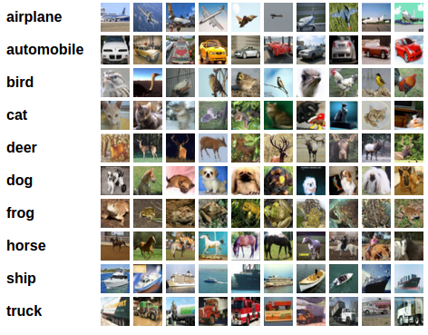

Lab Activity: Training a Neural Network Classifier#
Adapted from: https://pytorch.org/tutorials/beginner/blitz/cifar10_tutorial.html
Note: This notebook requires GPU resources and will not run in the JupyterHub. We recommend using Google Colab.
Neural networks, the foundation of much of the AI revolution can be incredibly powerful and simple. Here we will show you how to build train and use an image classifier.
It should amaze you that in just a few lines of code and a few minutes, from scratch you can take some labeled images and train a model to correctly classify similar images.
What about data?#
For this tutorial, we will use the CIFAR10 dataset. It has the classes: ‘airplane’, ‘automobile’, ‘bird’, ‘cat’, ‘deer’, ‘dog’, ‘frog’, ‘horse’, ‘ship’, ‘truck’. The images in CIFAR-10 are of size 3x32x32, i.e. 3-channel color images of 32x32 pixels in size.

Training an image classifier#
We will do the following steps in order:
Load and normalize the CIFAR10 training and test datasets using
torchvisionDefine a Convolutional Neural Network
Define a loss function
Train the network on the training data
Test the network on the test data
1. Load and normalize CIFAR10#
Using torchvision, it’s extremely easy to load CIFAR10.
# Imports some packages
import torch
import torchvision
import torchvision.transforms as transforms
Checks if you are using a GPU#
If the code below returns an error please change runtime to a GPU
First, you’ll need to enable GPUs for the notebook:
Navigate to Edit→Notebook Settings
select GPU from the Hardware Accelerator drop-down
Next, we’ll confirm that we can connect to the GPU:
# Checks if you are using a GPU
if not torch.cuda.is_available():
raise SystemError('GPU device not found')
print('Found GPU at: {}'.format(torch.cuda.get_device_name()))
The output of torchvision datasets are PILImage images of range [0, 1]. We transform them to Tensors of normalized range [-1, 1].
This makes it much easier to train because machine learning models like data that is nicely distributed between [-1, 1]
Note
If running on Windows and you get a BrokenPipeError, try setting the num_worker of torch.utils.data.DataLoader() to 0.
# This applies a transformation to the image and conducts the normalization
# Transformations are commonly used in machine learning to diversify data through data augmentation
transform = transforms.Compose(
[transforms.ToTensor(),
transforms.Normalize((0.5, 0.5, 0.5), (0.5, 0.5, 0.5))])
# This is the number of images the model views every optimization step
batch_size = 32
# This downloads the training dataset
trainset = torchvision.datasets.CIFAR10(root='./data', train=True,
download=True, transform=transform)
# This builds a dataloader that helps randomly grab samples for training
trainloader = torch.utils.data.DataLoader(trainset, batch_size=batch_size,
shuffle=True, num_workers=2)
# This downloads the test dataset
testset = torchvision.datasets.CIFAR10(root='./data', train=False,
download=True, transform=transform)
# This builds a dataloader for the test dataset
testloader = torch.utils.data.DataLoader(testset, batch_size=batch_size,
shuffle=False, num_workers=2)
# list of classes
classes = ('plane', 'car', 'bird', 'cat',
'deer', 'dog', 'frog', 'horse', 'ship', 'truck')
Let us show some of the training images, for fun.
# imports some packages to view some images
import matplotlib.pyplot as plt
import numpy as np
# functions to show an image
# This is a function the unormalizes and plots the image
def imshow(img):
img = img / 2 + 0.5 # unnormalize
# converts a tensor (used in pytorch) to a numpy array
npimg = img.numpy()
# reshapes and plots the image
plt.imshow(np.transpose(npimg, (1, 2, 0)))
plt.show()
# get some random training images
dataiter = iter(trainloader)
images, labels = next(dataiter)
# show images
imshow(torchvision.utils.make_grid(images))
# print labels
print(' '.join(f'{classes[labels[j]]:5s}' for j in range(batch_size)))
2. Define a Convolutional Neural Network#
Copy the neural network from the Neural Networks section before and modify it to take 3-channel images (instead of 1-channel images as it was defined).
import torch.nn as nn
import torch.nn.functional as F
device = torch.device('cuda:0' if torch.cuda.is_available() else 'cpu')
# Assuming that we are on a CUDA machine, this should print a CUDA device:
print(device)
class Net(nn.Module):
def __init__(self):
super().__init__()
# These are a bunch of different layers in the neural network
# This is a 2D convolutional layer
self.conv1 = nn.Conv2d(3, 6, 5)
# This is a max pooling layer which is used for downsampling
self.pool = nn.MaxPool2d(2, 2)
self.conv2 = nn.Conv2d(6, 16, 5)
# These are just linear layers (y = mX + b)
self.fc1 = nn.Linear(16 * 5 * 5, 120)
self.fc2 = nn.Linear(120, 84)
self.fc3 = nn.Linear(84, 10)
def forward(self, x):
# This defines the forward pass through the network by calling the layers
x = self.pool(F.relu(self.conv1(x))) # ReLu is a non-linear activation function
x = self.pool(F.relu(self.conv2(x)))
x = torch.flatten(x, 1) # flatten all dimensions except batch
x = F.relu(self.fc1(x))
x = F.relu(self.fc2(x))
x = self.fc3(x)
return x
net = Net().to(device)
3. Define a Loss function and optimizer#
Let’s use a Classification Cross-Entropy loss and SGD with momentum.
import torch.optim as optim
# Sets the loss criteria to cross entropy
criterion = nn.CrossEntropyLoss()
# Uses ADAM a momentum-based optimizer
optimizer = optim.Adam(net.parameters(), lr=0.001)
4. Train the network#
This is when things start to get interesting. We simply have to loop over our data iterator, and feed the inputs to the network and optimize.
for epoch in range(6): # loop over the dataset multiple times
running_loss = 0.0
for i, data in enumerate(trainloader, 0):
# get the inputs; data is a list of [inputs, labels]
inputs, labels = data
# zero the parameter gradients
optimizer.zero_grad()
# forward + backward + optimize
outputs = net(inputs.to(device))
loss = criterion(outputs.to(device), labels.to(device))
loss.backward()
optimizer.step()
# print statistics
running_loss += loss.item()
if i % 100 == 99: # print every 2000 mini-batches
print(f'[{epoch + 1}, {i + 1:5d}] loss: {running_loss / 2000:.3f}')
running_loss = 0.0
print('Finished Training')
Let’s quickly save our trained model:
PATH = './cifar_net.pth'
torch.save(net.state_dict(), PATH)
5. Test the network on the test data#
We have trained the network for 6 passes over the training dataset. But we need to check if the network has learnt anything at all.
We will check this by predicting the class label that the neural network outputs, and checking it against the ground-truth. If the prediction is correct, we add the sample to the list of correct predictions.
Okay, first step. Let us display an image from the test set to get familiar.
dataiter = iter(testloader)
images, labels = next(dataiter)
# print images
imshow(torchvision.utils.make_grid(images))
print('GroundTruth: ', ' '.join(f'{classes[labels[j]]:5s}' for j in range(batch_size)))
outputs = net(images.to(device))
The outputs are energies for the 10 classes. The higher the energy for a class, the more the network thinks that the image is of the particular class. So, let’s get the index of the highest energy:
_, predicted = torch.max(outputs, 1)
print('Predicted: ', ' '.join(f'{classes[predicted[j]]:5s}'
for j in range(batch_size)))
The results seem pretty good.
Let us look at how the network performs on the whole dataset.
correct = 0
total = 0
# since we're not training, we don't need to calculate the gradients for our outputs
with torch.no_grad():
for data in testloader:
images, labels = data
# calculate outputs by running images through the network
outputs = net(images.to(device))
# the class with the highest energy is what we choose as prediction
_, predicted = torch.max(outputs.data, 1)
total += labels.size(0)
correct += (predicted.to(device) == labels.to(device)).sum().item()
print(f'Accuracy of the network on the 10000 test images: {100 * correct // total} %')
That looks way better than chance, which is 10% accuracy (randomly picking a class out of 10 classes). Seems like the network learnt something.
Hmmm, what are the classes that performed well, and the classes that did not perform well:
# prepare to count predictions for each class
correct_pred = {classname: 0 for classname in classes}
total_pred = {classname: 0 for classname in classes}
# again no gradients needed
with torch.no_grad():
for data in testloader:
images, labels = data
outputs = net(images.to(device))
_, predictions = torch.max(outputs, 1)
# collect the correct predictions for each class
for label, prediction in zip(labels, predictions):
if label == prediction:
correct_pred[classes[label]] += 1
total_pred[classes[label]] += 1
# print accuracy for each class
for classname, correct_count in correct_pred.items():
accuracy = 100 * float(correct_count) / total_pred[classname]
print(f'Accuracy for class: {classname:5s} is {accuracy:.1f} %')
Challenge Activity#
The accuracy obtained is pretty good, but I bet you could do better. Use ChatGPT to try and build a better model. Share your best result with your TA for credit.
You should be proud. You just trained a neural network!!!